目次
CoVLA: Comprehensive Vision-Language-Action Dataset for Autonomous Driving
Hidehisa Arai*、Keita Miwa*、Kento Sasaki*、Kohei Watanabe、Yu Yamaguchi、Shunsuke Aoki、Issei Yamamoto
Turing Inc.
https://turingmotors.github.io/covla-ad/
arXiv:2408.10845v3 [cs.CV]、2025年10月14日
翻訳について：原文 PDF は
52_CoVLA_2408.10845.pdf（全 14 ページ）。本文、図の説明、図中ラベル、表、脚注、付録を訳出し、論文タイトルと参考文献は原文のまま掲載。図は原図を掲載し、英語ラベルの日本語訳を併記した。数式・数値・引用番号・コードの識別子は原文を維持。原文の記述に関する補足は「訳注」と明示し、本文と区別している。
脚注*：同等の貢献。
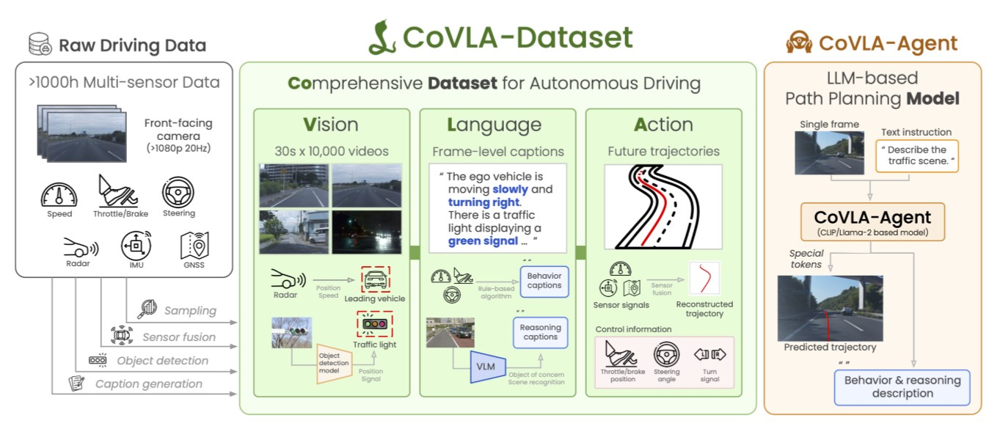
図1：CoVLA フレームワークの概要。我々は、自動運転のための包括的なデータセットである CoVLA-Dataset を構築した。これは、互いに重複しない 10,000 本のビデオクリップ、走行シナリオを記述するフレーム単位の言語キャプション、および将来軌跡としての行動（action）を含む。また、車両の将来軌跡を予測し、その挙動と理由をテキストで説明できる VLM ベースの経路計画モデル CoVLA-Agent も示す。
図中ラベル：Raw Driving Data＝生の走行データ、>1000h Multi-sensor Data＝1000 時間超のマルチセンサデータ、Front-facing camera (>1080p 20Hz)＝前方カメラ（1080p 超、20Hz）、Speed＝速度、Throttle/Brake＝アクセル／ブレーキ、Steering＝ステアリング、Radar＝レーダ、IMU＝慣性計測装置、GNSS＝全球測位衛星システム、Sampling＝サンプリング、Sensor fusion＝センサフュージョン、Object detection＝物体検出、Caption generation＝キャプション生成、Comprehensive Dataset for Autonomous Driving＝自動運転のための包括的データセット、Vision＝視覚、30s x 10,000 videos＝30 秒×10,000 本の動画、Position／Speed＝位置／速度、Leading vehicle＝先行車、Traffic light＝信号機、Object detection model＝物体検出モデル、Position／Signal＝位置／信号、Language＝言語、Frame-level captions＝フレーム単位のキャプション、"The ego vehicle is moving slowly and turning right. There is a traffic light displaying a green signal ..."＝「自車はゆっくりと右折中である。青信号を表示している信号機がある…」、Rule-based algorithm＝ルールベースのアルゴリズム、Behavior captions＝挙動キャプション、Reasoning captions＝推論キャプション、Object of concern／Scene recognition＝注意対象物体／シーン認識、Action＝行動、Future trajectories＝将来軌跡、Sensor signals＝センサ信号、Reconstructed trajectory＝再構成された軌跡、Control information＝制御情報、Throttle/brake position＝アクセル／ブレーキ位置、Steering angle＝操舵角、Turn signal＝方向指示器、LLM-based Path Planning Model＝LLM ベースの経路計画モデル、Single frame＝単一フレーム、Text instruction＝テキスト指示、"Describe the traffic scene."＝「交通シーンを説明せよ。」、CLIP/Llama-2 based model＝CLIP／Llama-2 ベースのモデル、Special tokens＝特殊トークン、Predicted trajectory＝予測軌跡、Behavior & reasoning description＝挙動と理由の説明
要旨
自動運転、とりわけ複雑で予期しないシナリオの走行には、高度な推論・計画能力が求められる。マルチモーダル大規模言語モデル（MLLM）はこのための有望な手段となるが、その利用は主に複雑な環境文脈の理解や高レベルの運転コマンドの生成に限られており、エンドツーエンドの経路計画にまで適用を広げた研究はほとんどない。研究上の大きなボトルネックは、視覚・言語・行動を網羅する大規模なアノテーション付きデータセットが存在しないことである。この問題に対処するため、我々は 80 時間を超える実世界の走行動画からなる大規模データセット CoVLA（Comprehensive Vision-Language-Action）Dataset を提案する。本データセットは、自動化されたデータ処理とキャプション生成パイプラインに基づく新規でスケーラブルな手法を用いて、正確な走行軌跡と、走行環境および運転操作を詳細に記述した自然言語の説明とを対にして生成している。この手法は生の車載センサデータを活用するため、規模とアノテーションの豊富さの両面で既存のデータセットを上回ることができる。CoVLA を用いて、我々は多様な走行シナリオにおいて視覚・言語・行動を扱える MLLM の運転能力を調査する。結果は、一貫した言語出力と行動出力を生成する我々のモデルの高い能力を示しており、自動運転分野における Vision-Language-Action（VLA）モデルの可能性を強調するものである。本データセットは、VLA モデルの学習と評価のための包括的な基盤を提供することで、頑健かつ解釈可能でデータ駆動型の自動運転システムのための枠組みを確立し、より安全で信頼性の高い自動運転車の実現に貢献する。本データセットは学術目的で公開されている。
1 はじめに
自動運転技術における重要な課題は、多様で予測不能な走行環境の「ロングテール」に対処することにある［35, 63］。自動運転車は一般的なシナリオだけでなく、まれで複雑な状況にも対応しなければならず、そのためには多様な世界知識と高度な推論能力が必要となる［20］。これには、環境に対する深い理解と、物体の認識にとどまらずその挙動を解釈し、それに応じて行動を計画するまでに及ぶ推論能力が求められる。視覚認識と言語理解・行動計画をシームレスに統合する Vision-Language-Action（VLA）モデルは、この目標に向けた有望な道筋として台頭してきた。とりわけロボティクス［4, 28, 40］と自動運転［45］における VLA の近年の進展は、より頑健で知的な運転システムを実現する可能性を示している。
しかし、VLA モデルを自動運転に適用するうえでの大きな障害は、視覚データを言語による説明および運転行動と効果的に組み合わせた大規模データセットが存在しないことである。既存のデータセットは、規模と包括的なアノテーションの点で不十分であることが多く、特に言語については多大な手作業を要することが多い。このことが、実世界の運転の複雑さに対応できる頑健な VLA モデルの開発と評価を制約している。
本論文では、これらの制約を克服するために設計された新しい大規模データセット CoVLA（Comprehensive Vision-Language-Action）Dataset を紹介する。CoVLA-Dataset はラベル付けとキャプション付けにスケーラブルな自動化手法を用いており、合計 80 時間を超える動画からなる 10,000 件の実世界の走行シーンを収めた豊富なデータセットを作り出している。30 秒の各シーンには、同期した前方カメラ映像と車載センサのデータから導出された、正確な走行経路と自然言語による詳細な説明が含まれる。この豊富なデータセットにより、走行環境とエージェントの挙動をより深く理解することが可能になる。自動運転研究の推進におけるその有効性を示すため、我々は本データセットで学習した、軌跡予測と交通シーン記述生成のための VLA モデルである CoVLA-Agent を開発した。我々の知見は、複雑で高度な判断を要する状況においてさえ、この VLA モデルが一貫した精度の高い予測を行えることを示している。本論文の主な貢献は以下のとおりである。
- 多様な走行シナリオに対する軌跡ターゲットと、フレームごとの詳細な状況説明を提供する大規模データセット CoVLA Dataset を導入する。
- センサフュージョンによって軌跡を正確に推定し、運転上重要な情報のフレーム単位のテキストキャプションを自動生成するスケーラブルな手法を提示する。
- CoVLA Dataset に基づく、解釈可能なエンドツーエンド自動運転のための新しい VLA モデル CoVLA-Agent を開発する。我々のモデルは、走行シーンの説明の生成と軌跡の予測を一貫して行える能力を示しており、より信頼性の高い自動運転への道を開くものである。
2 関連研究
2.1 自動運転のためのデータセット
自動運転の研究は、大規模データセットの発展と深く結びついてきた［29, 34］。これらのデータセットの進化には、より豊富なセンサとモダリティを取り込む明確な傾向が見られ、物体認識のような個別タスクへの注力から、シーン理解、動き予測、エンドツーエンド運転といったより複雑な課題へと移行してきた。初期の取り組みは主に交通環境の認識に焦点を当てており、歩行者認識［14, 18, 39, 62］、信号機・標識認識［3, 15, 19, 22, 41, 50, 61, 64］、走行シーンのセグメンテーション［5, 13, 38, 46, 60］などのタスク向けのデータセットが提案された。
自動運転タスクの複雑化に伴い、さまざまなセンサのデータを取り込んだ大規模データセットが開発されるようになった。KITTI［21］はその先駆的な研究であり、前方カメラと LiDAR で記録した走行映像を提供している。また、3D バウンディングボックスのアノテーションと真値軌跡も含んでいる。Waymo Open Dataset［51］は同様のアプローチを採りつつ、規模と多様性の両方を大幅に向上させた。Argoverse 1［9］、Argoverse 2［55］、nuScenes［7］は、マルチセンサ情報と 3D バウンディングボックスのアノテーションに加えて高精度地図（HD-Map）を提供しており、動き予測タスクにより適したものとなっている。同じく HD-Map を含む Lyft L5［23］と nuPlan［8］は、計画タスクにより重点を置いている。これらの豊富なマルチモーダルデータセットは、3D 物体検出、軌跡予測、行動計画といった分野の研究を大きく前進させ、より複雑で現実的な走行シナリオに対応できるアルゴリズムの開発を可能にした。
近年、大規模言語モデル（LLM）の発展により、複雑な走行環境の理解と運転操作の計画にマルチモーダル LLM（MLLM）を用いる試みが生まれている。これにより、交通環境に特化した Vision-Language データセットが登場した。BDD-X［27］は、走行動画における自車の行動の背後にある理由を記述した、人手でアノテーションされた自由形式のキャプションを提供している。BDD-OIA［56］データセットでは、自車の反応を引き起こす物体に関する閉形式（closed-form）の説明が、推奨行動とともに提供されている。同様に、DRAMA［36］は走行中のリスクの特定を目的とした閉形式および自由形式のキャプションを提供している。また、リスク事象に関連する物体のアノテーションと推奨行動コマンドも含んでいる。OpenDV-2K［58］は公開動画から作成された大規模データセットであり、自動生成されたテキストキャプションと運転行動コマンドでアノテーションされている。しかし、これらのデータセットは行動として高レベルの運転コマンド（例：「停止」や「左折」）のみを提供しており、詳細な運転操作の表現やエンドツーエンド自動運転システムの学習に不可欠な、きめ細かい軌跡情報を欠いていることが多い。HAD［26］、Talk2Car［17］、Talk2Car-Trajectory［16］、DriveLM［49］は、よりきめ細かい行動アノテーションとして軌跡情報を含む Vision-Language データセットである。しかし、これらのデータセットは規模、特に収録する走行シナリオの多様性と複雑さの点で限られていることが多く、真に頑健で汎化可能な VLA モデルの開発を支える能力を妨げている。
| データセット | 年 | 視覚データ | 言語データ | 行動データ | ||||
|---|---|---|---|---|---|---|---|---|
| フレーム数 | ソース | 種類 | 方法 | 件数 | 種類 | 方法 | ||
| BDD-X［27］ | 2018 | 26.2K | BDD［59］ | Caption | Manual | 26K | — | — |
| BDD-OIA［56］ | 2020 | 22.9K | BDD［59］ | Caption | Manual | 27K | Command | Manual |
| DRAMA［36］ | 2023 | 17.8K | Original (Real) | Caption | Manual | 17K | Command | Manual |
| OpenDV-2K［58］ | 2024 | 65.1M | YouTube Public Datasets | Caption | Auto (Single) | 65.1M | Command | Auto |
| HAD［26］ | 2019 | 1.1M | HDD［44］ | Caption | Manual | 47K | Traj, Command | Base |
| Talk2Car［17］ | 2019 | 400K | nuScenes［6］ | Caption | Manual | 12K | Traj | Base |
| Talk2Car-Trajectory［16］ | 2022 | 400K | nuScenes［6］ | Caption | Manual | 12K | Traj, Command | Base, Manual |
| DriveLM-nuScenes［49］ | 2023 | 4.8K | nuScenes［6］ | QA | Manual | 445K | Traj | Base |
| DriveLM-CARLA［49］ | 2023 | 183K | Original (Sim) | QA | Auto (Single) | 3.76M | Traj | Sim |
| CoVLA (ours) | 2024 | 6M | Original (Real) | Caption | Auto (Multi) | 6M | Traj | GPS/IMU |
表1：言語データと行動データを備えた走行データセットの比較。
表中の語：Original (Real)＝独自収集（実環境）、Original (Sim)＝独自収集（シミュレーション）、YouTube Public Datasets＝YouTube・公開データセット、Caption＝キャプション、QA＝質問応答、Manual＝人手、Auto (Single)＝自動（単一）、Auto (Multi)＝自動（複数）、Command＝コマンド、Traj＝軌跡、Base＝元データセット由来、Sim＝シミュレーション、ours＝本研究
2.2 運転タスクのための MLLM
実世界の走行シナリオの複雑でしばしば予測不能な性質、特に走行分布の「ロングテール」に属するもの（例：通行止めの道路での走行）に対処するには、自動運転システムにより高度な推論と意思決定の能力が必要となる。近年の研究では、MLLM を自動運転システムに組み込み、その強力な推論能力と言語理解能力を活用してこれらの課題に対処することにますます焦点が当てられている。たとえば ADAPT［24］は、視覚言語モデル（VLM）を用いて運転行動の自然言語による説明を生成し、その背後にある理由を提示することで、システムの解釈可能性を高めている。言語モデルを用いて運転行動を予測する初期の試みでは、GPT-3.5 と GPT-4［1］を用いて状況説明から高レベルの運転コマンドを予測していた［20, 54］。こうした初期の取り組みが、より最近の研究の基礎を築いた。それらの研究では、LLM をファインチューニングして、軌跡［49, 57］や、操舵や加速などの制御信号［10, 37, 47］といったさまざまな種類の運転行動をテキスト出力によって予測することが検討されている。これらの手法が言語を通じて運転操作を直接扱うのに対し、LMDrive［48］と DriveMLM［53］は、Transformer の出力からの埋め込みをデコーダに渡すことで制御信号を予測する。CarLLaVA［45］は LLaVA アーキテクチャを用い、画像、車速、目標位置座標を入力として軌跡を予測する。特筆すべきことに、この手法は CARLA leaderboard 2.0 において既存手法を大きく上回る性能を達成しており、複雑な軌跡予測タスクに対する VLM の有効性を示している。
3 データセット
本節では CoVLA-Dataset を詳しく取り上げ、その構造、内容、そして自動運転研究のためのこの貴重なリソースを作成するために用いた手法を詳述する。我々は、多様な実世界の走行シナリオを網羅していること、同期したマルチモーダルデータストリーム（前方カメラ、車両信号、その他のセンサ）、そして大規模なアノテーション付きデータ（合計 80 時間超の動画からなる 10,000 件の走行シーンで、それぞれが正確なフレーム単位の軌跡と説明的なキャプションのアノテーションを持つ）を特に強調する。この大規模な VLA データセットを作成するため、我々は生データからシーン説明と真値軌跡を自動生成する、新しくスケーラブルな手法を開発した。
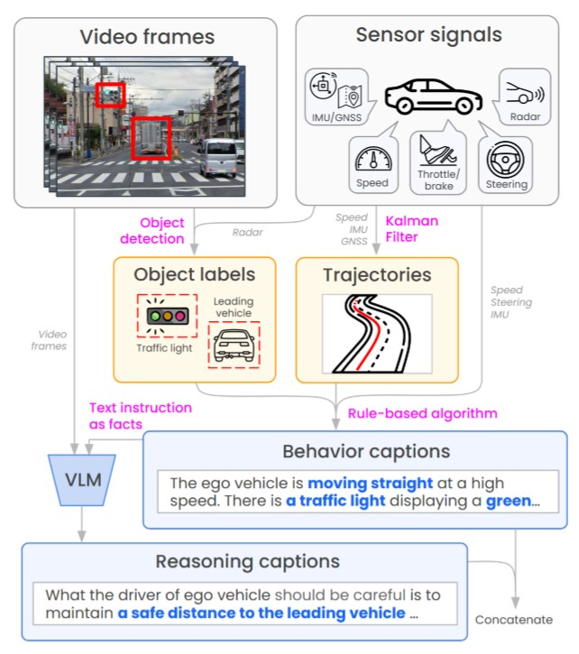
図2：データセット生成パイプラインの概要。動画フレームとセンサ信号に自動でラベル付けを行い、軌跡やその他のラベルを生成する。さらに、動画フレームに自動キャプション付けを適用し、挙動キャプションと推論キャプションの両方を生成する。
図中ラベル：Video frames＝動画フレーム、Sensor signals＝センサ信号、IMU/GNSS＝IMU／GNSS、Radar＝レーダ、Speed＝速度、Throttle/brake＝アクセル／ブレーキ、Steering＝ステアリング、Object detection＝物体検出、Kalman Filter＝カルマンフィルタ、Object labels＝物体ラベル、Traffic light＝信号機、Leading vehicle＝先行車、Trajectories＝軌跡、Speed Steering IMU＝速度・操舵・IMU、Text instruction as facts＝事実としてのテキスト指示、Rule-based algorithm＝ルールベースのアルゴリズム、Behavior captions＝挙動キャプション、"The ego vehicle is moving straight at a high speed. There is a traffic light displaying a green..."＝「自車は高速で直進している。…青を表示している信号機がある…」、Reasoning captions＝推論キャプション、"What the driver of ego vehicle should be careful is to maintain a safe distance to the leading vehicle ..."＝「自車の運転者が注意すべきことは、先行車との安全な車間距離を保つことである…」、Concatenate＝連結
3.1 構築
3.1.1 生データ
我々は実世界の走行データを取得するために複数のデータ収集車両を開発し、日本の東京周辺に配備した。取得するデータには、前方カメラ、Controller Area Network（CAN）バス、全球測位衛星システム（GNSS）、慣性計測装置（IMU）のセンサデータが含まれる。
- データ収集期間：6 か月（夏から冬）。結果として 1000 時間を超える生データが得られた。
- データ収集環境：東京およびその周辺のさまざまな場所（都市中心部、複雑な高速道路のインターチェンジ、狭い住宅街の道路、曲がりくねった道のある山間部）、さまざまな天候（晴れ、曇り、雨、豪雨）、さまざまな時間帯（日中、夕方、夜間）。
- 機材：前方カメラ（1928×1208 ピクセル、20 FPS、H.265 コーデック）、CAN バス（アクセル／ブレーキペダル位置、ステアリングホイール角、方向指示器の状態、ギア位置、車速）、GNSS と IMU（タイムスタンプ付きのバイナリ形式）、車載ストレージ装置。
3.1.2 データサンプリング
1,000 時間を超える生の走行データから、次の基準を満たす数百時間分を慎重に選択する。(1) 車両がドライブギアの状態で記録されたこと、(2) 最高速度が 100 km/h を超えないこと、(3) GNSS データが途切れなく利用可能であること。
走行シナリオの多様性を重視するため、所与の特徴量の集合について事前に計算した経験分布に反比例する重み付けを行って、個々のデータ点をサンプリングする。具体的には、バランスをとる特徴量として操舵角の絶対値の最大値、加速度の絶対値の最大値、および方向指示器を選び、前二者にはビン分割を適用する。これらのカテゴリ特徴量の経験的な同時分布を計算する。平滑化パラメータ \( \delta = 50 \) で加法平滑化［11］を適用した後、これらの値の逆数をサンプリング時の確率の重みとして用いる。これらの調整に基づき、この方法で多様な 30 秒のシーンを 10,000 件選択した。その結果、合計 6,000,000 の動画フレームとなり、これは 83.3 時間分の走行データに相当する。
3.1.3 自動ラベル付け
軌跡。VLA モデルが予測することになる将来軌跡データを取得するため、GNSS と IMU のセンサを用いたカルマンフィルタ［25］によって車両の走行経路を推定する。各タイムスタンプについて、その後 3 秒間（60 フレーム）の将来軌跡のデータ点をアノテーションする。軌跡データは、データ収集車両を中心とするグローバル座標系で表現される。場合によっては GNSS データの不安定さにより、大きな振動を特徴とする誤った軌跡が生じることがある。我々はヒューリスティックな手法を導入して、これらの不正確な軌跡を特定し、データセットから除去する。詳細は補足資料で報告する。
物体。信号機は走行環境において最も重要な物体の一つであり、その状態を正確に検出することは VLA モデルの学習を強力に支える。我々は信号機検出のために特別に設計された深層学習モデル（OpenLenda-s1）を用いてデータにアノテーションを付ける。このモデルは信号機の色だけでなく矢印信号の方向も正確に識別でき、各フレームの信号機情報を包括的に把握することを可能にする。
脚注1：https://github.com/turingmotors/openlenda/releases/tag/v0.1.0
加えて、先行車の正確な検出と追跡は、交通の流れを理解し潜在的な危険を予測するうえで極めて重要であり、我々のデータセットのもう一つの不可欠な要素となっている。頑健性を確保するため、レーダと前方カメラの両方のデータを組み合わせるセンサフュージョン手法を採用する。我々のデータセットには、検出された先行車について、その速度、加速度、自車に対する相対位置を含む包括的な情報が含まれる。
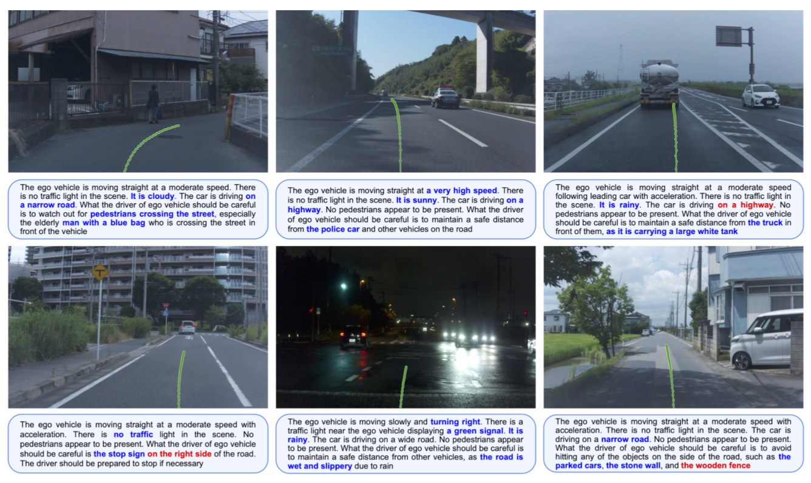
図3：CoVLA-Dataset のフレーム例。推定された軌跡（緑色の線）と、キャプショナーモデルが生成したキャプションを示す。重要な物体は青の太字で強調し、キャプション中の誤りは赤の太字で示している。
図中キャプションの訳（上段左から）：(1)「自車は中程度の速度で直進している。シーンに信号機はない。曇りである。車は狭い道路を走行している。自車の運転者は道路を横断する歩行者、特に車両前方で道路を横断している青いバッグを持った高齢の男性に注意すべきである」。(2)「自車は非常に高い速度で直進している。シーンに信号機はない。晴れである。車は高速道路を走行している。歩行者は見当たらない。自車の運転者が注意すべきことは、パトカーやその他の道路上の車両との安全な車間距離を保つことである」。(3)「自車は先行車に追従しながら加速しつつ中程度の速度で直進している。シーンに信号機はない。雨である。車は高速道路を走行している（赤字＝誤り）。歩行者は見当たらない。自車の運転者が注意すべきことは、前方のトラックとの安全な車間距離を保つことである。それが大きな白いタンクを積んでいるため」。（下段左から）(4)「自車は加速しつつ中程度の速度で直進している。シーンに信号機はない。歩行者は見当たらない。自車の運転者が注意すべきことは道路の右側（赤字＝誤り）の一時停止標識である。運転者は必要に応じて停止できるよう備えるべきである」。(5)「自車はゆっくりと右折している。自車の近くに青信号を表示している信号機がある。雨である。車は広い道路を走行している。歩行者は見当たらない。自車の運転者が注意すべきことは、雨で路面が濡れて滑りやすいため、他の車両との安全な車間距離を保つことである」。(6)「自車は加速しつつ中程度の速度で直進している。シーンに信号機はない。車は狭い道路を走行している。歩行者は見当たらない。自車の運転者が注意すべきことは、駐車車両、石垣、木製の柵（赤字＝誤り）など道路脇の物体に衝突しないようにすることである」。
3.1.4 自動キャプション付け
ルールベースのキャプション付け。キャプションは vision-language-action データセットに不可欠であるが、人手によるアノテーションには大きな課題がある。人手のアノテーションはコストと時間がかかり、キャプションの品質の不一致にもしばしば悩まされる。これらの制約に対処しスケーラビリティを確保するため、我々は自動キャプション付けの手法を開発した。
我々の手法の第 1 段階として、自然言語によるルールベースのキャプションを生成する。速度、加速度、軌跡の曲率、先行車の有無、信号機の状態など、車両の運動と検出された物体のさまざまな側面を考慮し、データセットの各フレームについて包括的なルールベースのキャプションを生成する。
VLM ベースのキャプション付け。ルールベースのキャプション付けは効率的で費用対効果が高いものの、自然言語としての豊かさに欠けることが多く、特定の標識や珍しい物体などの重要な詳細を見落とす可能性がある。キャプションの表現力と情報量を高めるため、事前学習済みの VLM を用いてルールベースのキャプションを拡張する。OpenDV-2K［58］などの一部のデータセットは BLIP-2［30］のようなモデルによる単一フレームの自動キャプション付けを用いているが、この手法では走行シナリオに本来備わっている重要な時間的情報を捉えられない。この制約に対処するため、時空間モデリングに長け、動画の質問応答とキャプション付けのタスクで高い性能を示す大規模動画言語モデルである、事前学習済みの VideoLLaMA 22 を用いる［12］。
キャプショナーモデルは 60 フレーム（3 秒）のウィンドウ単位で動作し、入力動画からサンプリングした、ウィンドウの最初と最後のフレームを含む 8 枚の代表フレームを処理する。処理負荷を管理するため、30 秒の各シーンは 10 個のウィンドウに分割される。この手法により、100,000 件の VLM 生成キャプションと、ルールベースと VLM 生成の両キャプションを統合した後の 6,000,000 件の結合キャプションが得られる。キャプション生成は 8 基の NVIDIA H100 GPU を用いて行われ、全工程が 1 日以内に完了する。これは人手によるアノテーションと比べて大幅な時間短縮を示している。
ハルシネーションの抑制。VLM の既知の課題として、特に視覚的質問応答や画像キャプション付けのようなタスクにおいて、視覚的内容を正確に反映しないキャプションを生成する、すなわちハルシネーションを生じる傾向がある［2, 33］。
この問題を軽減するため、我々は包括的なルールベースのキャプションを事実上の制約として用いる。これらのキャプションは、ルールでまだカバーされていない追加情報でキャプションを補うよう指示するプロンプトとともに、文脈として VLM に与えられる。この補足情報は、モデルに問い合わせてその内部のトークン確率分布を調べることで導出され、道路の種類（例：狭い／広い、高速道路／一般道、トンネル内／トンネル外）、天候（例：晴れ、曇り、雨）、潜在的なリスク（例：歩行者の存在）、その他の関連要因に関する詳細を含む。たとえば天候を判定するには、クエリ「What is the weather in this video?」が与えられたときの各天候関連トークン（例：「sunny」、「cloudy」、「rainy」）の確率を計算し、最も確率の高いトークンを選択する。こうして拡張したルールベースのキャプションを事実のアンカーとして用い、走行環境内の潜在的リスクの特定に焦点を当てた自由形式のキャプションを生成するよう VLM にプロンプトを与える。
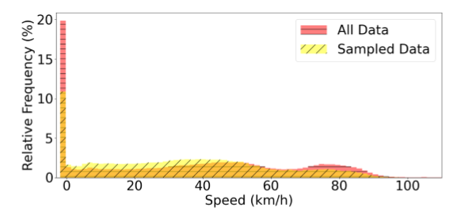
(a) サンプリング前後の速度分布。
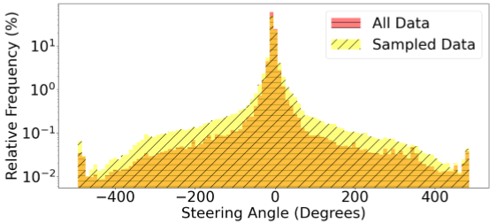
(b) サンプリング前後の操舵角分布。
図4：車速と操舵角のデータ分布。赤い棒はサンプリング前の分布を、黄色の棒はサンプリング後の分布を表す。(b) では見やすさのため対数スケールを用いていることに注意されたい。
図中ラベル：Relative Frequency (%)＝相対頻度（%）、Speed (km/h)＝速度（km/h）、Steering Angle (Degrees)＝操舵角（度）、All Data＝全データ、Sampled Data＝サンプリング後のデータ
3.2 分析
統計。3.1.2 節で述べたシーンサンプリング手法の影響を評価するため、まず主要な運転パラメータの分布を分析する。図4a と図4b に示すように、車速と操舵角の分布はサンプリング後により一様になっており、低速のデータ点が目に見えて増加し、操舵角の 0 度付近の中央のピークが小さくなっている。これにより、さまざまな範囲にわたってよりバランスのとれた表現となっている。その結果、CoVLA-Dataset は多様な運転操作を示しており、方向指示器が作動しているフレームが 16.11%、信号機が写っているフレームが 22.90% である。発進／停止、旋回、車線変更を含むこの多様性は、自動運転システムにおける頑健な認識、意思決定、制御のアルゴリズムの必要性を強調している。
比較。表1 に示すように、我々の CoVLA-Dataset はいくつかの重要な利点を示している。我々は OpenDV-2K［58］と同様に、自動ラベル付けと MLLM ベースの自動キャプション付けを用いてデータセットを構築している。この自動化された手法は、自動運転研究において増加傾向にある大規模データセットの構築に不可欠であり［31］、人手のアノテーションに依存するデータセットよりも大幅に大きなデータセットの開発を可能にする。さらに、我々のデータセットには GPS と IMU のデータから導出した軌跡アノテーションが組み込まれているが、これは OpenDV-2K のように十分なメタデータを欠くデータセットにはない特徴である。
CoVLA-Dataset は、視覚・言語・行動のモダリティをシームレスに統合している点で他のデータセットと一線を画している。この統合は、さまざまなセンサからの同期した実世界データの取得と、我々の自動ラベル付け・キャプション付けパイプラインとの組み合わせによって実現されている。この包括的なアノテーションは走行環境のあらゆる関連する側面を捉えており、自動運転システムの学習と評価にとって貴重なリソースとなっている。
自動キャプション付けの限界。図3 は CoVLA-Dataset からサンプリングしたフレームを示しており、成功例と、自動キャプション付けが課題に直面した事例の両方を強調している。提案手法はスケーラブルで詳細な動画キャプション付けを効果的に可能にするものの、生成されたキャプションを分析すると、さらに改善すべき点が明らかになる。
我々は主に 2 つのカテゴリの誤りを特定した。第一に、キャプション付けモデルは時折物体のハルシネーションを示し、「木製の柵（wooden fence）」のようにシーンに存在しない物体を記述する。さらに、VLM は時折物体の位置やシーンの要素を誤認し、たとえば左側の物体を誤って「右側（right-side）」とラベル付けする。
我々が明らかにしたもう一つの限界は、地域特有のランドマーク、特に日本に固有のものの認識である。たとえば、日本の交通標識は日本語の文字を含むなど独自のデザインや意味を持つことが多く、適切な識別と解釈が必要となる。
これらの知見は、より頑健な物体検出アルゴリズム、走行環境に関するより多くの知識を備えた文脈を考慮したキャプション付けモデル、文化的に多様な学習データセットの開発など、今後の研究の重要な領域を浮き彫りにしている。
4 実験
本節では、CoVLA-Dataset の豊富さを自動運転タスクに活用するベースラインモデル CoVLA-Agent の開発と評価の方法論を示す。データセット、モデル構成、学習手順、評価指標を含む実験設定を詳述し、結果を分析する。
4.1 モデル
アーキテクチャ。図5 に示す CoVLA-Agent は、自動運転のために設計された VLA モデルである。言語モデルとして事前学習済みの Llama-2（7B）［52］を、視覚エンコーダとして CLIP ViT-L（224×224 ピクセル）［43］を用いる。加えて、我々のモデルは自車の速度を入力として受け取り、多層パーセプトロン（MLP）を用いてこれを埋め込みベクトルに変換する。CLIP ViT-L によって抽出された視覚特徴は、速度埋め込みおよびテキスト埋め込みと連結された後、Llama-2 モデルに入力される。軌跡予測には、特殊トークンを軌跡クエリとして用いる。これらの軌跡クエリの出力は MLP 層で処理され、3 秒間の時間範囲にわたる、現在位置を基準とした車両の予測軌跡を表す 10 個の \( (x, y, z) \) 座標の系列となる。
学習。このアーキテクチャに基づき、交通シーン記述生成と軌跡予測の 2 つのタスクで CoVLA-Agent を学習する。交通シーン記述生成では損失関数として交差エントロピー損失を用い、軌跡予測では平均二乗誤差損失を用いる。最終的に、学習は両方の損失を等しく重み付けした結合損失関数の最小化を目指す。
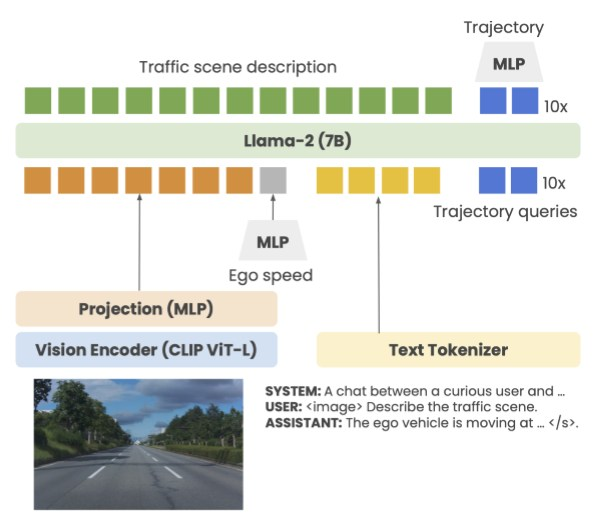
図5：CoVLA-Agent のアーキテクチャ。
図中ラベル：Traffic scene description＝交通シーンの説明、Trajectory＝軌跡、10x＝10 個、Trajectory queries＝軌跡クエリ、Ego speed＝自車速度、Projection (MLP)＝射影（MLP）、Vision Encoder (CLIP ViT-L)＝視覚エンコーダ（CLIP ViT-L）、Text Tokenizer＝テキストトークナイザ、SYSTEM: A chat between a curious user and ...＝システム：好奇心旺盛なユーザと…との対話、USER: <image> Describe the traffic scene.＝ユーザ：<image> 交通シーンを説明せよ。、ASSISTANT: The ego vehicle is moving at ... </s>.＝アシスタント：自車は…で走行している </s>。
4.2 実験設定
データ。CoVLA-Agent は CoVLA-Dataset で学習する。データセットの 10,000 シーンを、学習・検証・テストにそれぞれ 70/15/15 の割合で分割する。各シーンについて 2Hz の頻度でフレームをサンプリングし、その後 3 秒間の軌跡座標点（合計 60 座標点）をすべて含んでいないフレームは除外する。これら 60 座標点から、将来軌跡を表す 10 点を一様にサンプリングする。この処理により、学習用 302,989 サンプル、検証用 64,153 サンプル、テスト用 64,920 サンプルからなるデータサブセットが得られる。効率的なモデル学習のため、学習・検証データセットを LLaVA のインストラクションチューニング形式［32］に前処理する。図5 に示すこの形式は、システムプロンプト、ユーザ指示、アシスタントの応答から構成される。
条件。キャプション付けタスクがその後の軌跡予測に与える影響を調べるため、2 つの条件を用意する。CoVLA-Agent が軌跡を予測する前にキャプションを生成する予測キャプション（predicted caption）条件と、軌跡予測の際に予測キャプションの代わりに実際のキャプションを用いる真値キャプション（ground truth caption）条件である。
評価指標。軌跡予測の精度を評価するため、平均変位誤差（ADE）と最終変位誤差（FDE）の両方を計算する［42］。ADE は、全時間ステップにわたる予測軌跡点と真値軌跡点の間のユークリッド距離の平均として計算される。FDE は、予測された最終点と真値の最終点の間のユークリッド距離を測る。
\[ \mathrm{ADE} = \frac{1}{T}\sum_{t=1}^{T}\sqrt{(x_t-\hat{x}_t)^2+(y_t-\hat{y}_t)^2+(z_t-\hat{z}_t)^2} \]
\[ \mathrm{FDE} = \sqrt{(x_T-\hat{x}_T)^2+(y_T-\hat{y}_T)^2+(z_T-\hat{z}_T)^2} \]
4.3 結果
表2 に定性的な結果（訳注：原文は "qualitative results" だが、表2 は ADE／FDE による定量的比較であり、「定量的」の誤記と思われる）を示す。真値キャプションは、予測キャプションの ADE（0.955）と FDE（2.239）と比べて、より低い ADE（0.814）と FDE（1.655）を達成している。この結果は、CoVLA-Agent が予測キャプションを用いる場合よりも真値キャプションを用いる場合に良い性能を示すことを示している。
| 条件 | 評価指標 | |
|---|---|---|
| ADE ↓ | FDE ↓ | |
| predicted caption（予測キャプション） | 0.955 | 2.239 |
| ground truth caption（真値キャプション） | 0.814 | 1.655 |
表2：異なる条件の定量的比較。
4.4 考察
さまざまな走行シナリオにわたって我々のモデルの性能を分析する。
図6a は直線道路での正確な軌跡予測を示し、図6b は高速道路での合流の成功例を示している。図6c は、交通規制のために自車が右車線にいるシーンを示している。交通誘導員が右車線前方の赤い車を停止させている。それらを避けるため、我々のモデルは左車線に戻る軌跡を予測している。我々の手法は、このような複雑な交通規制のシーンにおいても正確な経路を生成できる。
図6d は交差点における軌跡予測の結果を示している。このシーンでは、真値キャプションに「moving straight（直進している）」という語句が含まれ、その条件で予測された軌跡は直進である。対照的に、「turning right（右折している）」という語句を含む予測キャプションに基づいて予測された軌跡は、右折の軌跡を正確に反映している。この結果は、このようなシーンにおいて単一フレームから意図を推定することの難しさを示す一方で、CoVLA-Agent における言語モダリティと行動モダリティの間の一貫性も裏付けている。
これらのキャプション誤りが軌跡に与える影響を調べるため、予測キャプションの誤りが ADE と FDE にどのように影響するかを調査する。具体的には、ある単語が真値のルールベースのキャプション部分には現れるが予測キャプションには現れない場合、およびその逆の場合について、キャプション中の単語ごとの ADE と FDE の平均値を分析する。ストップワードを除き、出現頻度が 10 を超える単語のうち ADE と FDE の値が最も大きくなった上位 10 語を表3 に示す。ただし、その順位は 2 つの指標の間で異なる。大きな ADE と FDE は、予測キャプションに不一致がある場合、特に「deceleration（減速）」、「left（左）」、「curve（カーブ）」、「turning（旋回）」など車両の運動方向や加速度に関連する単語で生じる。これらの観察に基づき、生成キャプションを用いて予測した軌跡の性能が相対的に低いのは、主に単一フレームから意図を推定することの難しさによるものと考えられる。
| 単語 | 平均 ADE ↓ | 平均 FDE ↓ | 頻度 |
|---|---|---|---|
| deceleration | 2.236 | 5.458 | 324 |
| left | 2.037 | 5.009 | 274 |
| acceleration | 1.826 | 4.790 | 50 |
| curve | 1.527 | 3.608 | 167 |
| following | 1.400 | 3.192 | 20 |
| turning | 1.343 | 3.288 | 636 |
| right | 1.324 | 3.282 | 810 |
| appear | 1.244 | 3.044 | 93 |
| present | 1.244 | 3.044 | 93 |
| signal | 1.229 | 3.049 | 117 |
表3：平均 ADE と FDE が最も大きい上位 10 語。これらの単語は、単一フレームからの推定が難しい運動に対応している。運動を明示的に表す単語は太字で示している。
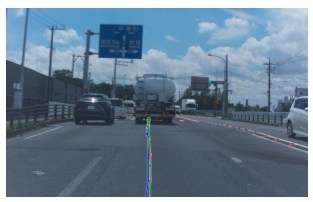
(a) 片側 3 車線の一般道のシーン。前方に銀色のタンクローリーがいる。
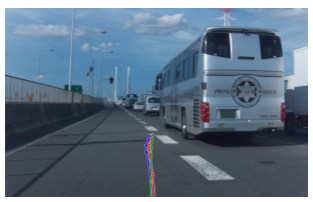
(b) 高速道路のシーン。自車は本線上の銀色のバスの後ろに合流しようとしている。
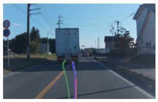
(c) 交通規制のシーン。自車は右車線におり、左車線に戻る必要がある。
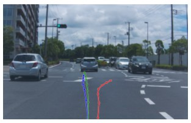
(d) 交差点のシーン。信号は青である。右車線には数台の車が並んでいる。
図6：さまざまな交通シーンにおける CoVLA-Agent による軌跡予測の結果。赤い線は予測キャプション条件での予測軌跡、青い線は真値キャプション条件で予測された軌跡、緑の線は真値の軌跡である。
これらの挙動は、我々の CoVLA-Dataset によってモデルが一貫したキャプションと軌跡を生成できるようになったことを示しており、多様な走行シーンに対応する優れた能力を示すとともに、複雑なシナリオに対処する自動運転モデルの学習に有用であることを示している。CoVLA-Dataset は、自動運転車への VLA モデルの応用に関する今後の研究を加速させる。
5 結論
本研究では、VLA モデルによる自動運転のための新しいデータセット CoVLA-Dataset を提示した。スケーラブルな自動化手法を活用することで、詳細な言語アノテーションで充実させた大規模で包括的なデータセットを構築した。この頑健なデータセットに基づき、洗練された VLA 自動運転モデル CoVLA-Agent を開発した。評価結果は、一貫した言語出力と行動出力を生成するこのモデルの高い能力を裏付けている。これらの知見は、VLA マルチモーダルモデルの変革的な可能性を浮き彫りにし、自動運転研究における今後の革新への道を開くものである。
謝辞
本論文は、国立研究開発法人新エネルギー・産業技術総合開発機構（NEDO）の助成事業 JPNP20017 の結果得られたものである。
参考文献
参考文献は原文のまま掲載した（各項目末尾の被引用ページへのリンク番号は省略）。
- Josh Achiam, Steven Adler, Sandhini Agarwal, Lama Ahmad, Ilge Akkaya, Florencia Leoni Aleman, Diogo Almeida, Janko Altenschmidt, Sam Altman, Shyamal Anadkat, et al. Gpt-4 technical report. arXiv preprint arXiv:2303.08774, 2023.
- Zechen Bai, Pichao Wang, Tianjun Xiao, Tong He, Zongbo Han, Zheng Zhang, and Mike Zheng Shou. Hallucination of multimodal large language models: A survey. arXiv preprint arXiv:2404.18930, 2024.
- Karsten Behrendt, Libor Novak, and Rami Botros. A deep learning approach to traffic lights: Detection, tracking, and classification. In 2017 IEEE International Conference on Robotics and Automation (ICRA), pages 1370–1377. IEEE, 2017.
- Anthony Brohan, Noah Brown, Justice Carbajal, Yevgen Chebotar, Xi Chen, Krzysztof Choromanski, Tianli Ding, Danny Driess, Avinava Dubey, Chelsea Finn, Pete Florence, Chuyuan Fu, Montse Gonzalez Arenas, Keerthana Gopalakrishnan, Kehang Han, Karol Hausman, Alex Herzog, Jasmine Hsu, Brian Ichter, Alex Irpan, Nikhil Joshi, Ryan Julian, Dmitry Kalashnikov, Yuheng Kuang, Isabel Leal, Lisa Lee, Tsang-Wei Edward Lee, Sergey Levine, Yao Lu, Henryk Michalewski, Igor Mordatch, Karl Pertsch, Kanishka Rao, Krista Reymann, Michael Ryoo, Grecia Salazar, Pannag Sanketi, Pierre Sermanet, Jaspiar Singh, Anikait Singh, Radu Soricut, Huong Tran, Vincent Vanhoucke, Quan Vuong, Ayzaan Wahid, Stefan Welker, Paul Wohlhart, Jialin Wu, Fei Xia, Ted Xiao, Peng Xu, Sichun Xu, Tianhe Yu, and Brianna Zitkovich. Rt-2: Vision-language-action models transfer web knowledge to robotic control. In arXiv preprint arXiv:2307.15818, 2023.
- Gabriel J Brostow, Jamie Shotton, Julien Fauqueur, and Roberto Cipolla. Segmentation and recognition using structure from motion point clouds. In Computer Vision–ECCV 2008: 10th European Conference on Computer Vision, Marseille, France, October 12-18, 2008, Proceedings, Part I 10, pages 44–57. Springer, 2008.
- Holger Caesar, Varun Bankiti, Alex H. Lang, Sourabh Vora, Venice Erin Liong, Qiang Xu, Anush Krishnan, Yu Pan, Giancarlo Baldan, and Oscar Beijbom. nuscenes: A multimodal dataset for autonomous driving. In Proceedings of the IEEE/CVF Conference on Computer Vision and Pattern Recognition (CVPR), June 2020.
- Holger Caesar, Varun Bankiti, Alex H Lang, Sourabh Vora, Venice Erin Liong, Qiang Xu, Anush Krishnan, Yu Pan, Giancarlo Baldan, and Oscar Beijbom. nuscenes: A multimodal dataset for autonomous driving. In Proceedings of the IEEE/CVF conference on computer vision and pattern recognition, pages 11621–11631, 2020.
- Holger Caesar, Juraj Kabzan, Kok Seang Tan, Whye Kit Fong, Eric Wolff, Alex Lang, Luke Fletcher, Oscar Beijbom, and Sammy Omari. nuplan: A closed-loop ml-based planning benchmark for autonomous vehicles. arXiv preprint arXiv:2106.11810, 2021.
- Ming-Fang Chang, John Lambert, Patsorn Sangkloy, Jagjeet Singh, Slawomir Bak, Andrew Hartnett, De Wang, Peter Carr, Simon Lucey, Deva Ramanan, et al. Argoverse: 3d tracking and forecasting with rich maps. In Proceedings of the IEEE/CVF conference on computer vision and pattern recognition, pages 8748–8757, 2019.
- Long Chen, Oleg Sinavski, Jan Hünermann, Alice Karnsund, Andrew James Willmott, Danny Birch, Daniel Maund, and Jamie Shotton. Driving with llms: Fusing object-level vector modality for explainable autonomous driving. arXiv preprint arXiv:2310.01957, 2023.
- Stanley F Chen and Joshua Goodman. An empirical study of smoothing techniques for language modeling. Computer Speech & Language, 13(4):359–394, 1999.
- Zesen Cheng, Sicong Leng, Hang Zhang, Yifei Xin, Xin Li, Guanzheng Chen, Yongxin Zhu, Wenqi Zhang, Ziyang Luo, Deli Zhao, et al. Videollama 2: Advancing spatial-temporal modeling and audio understanding in video-llms. arXiv preprint arXiv:2406.07476, 2024.
- Marius Cordts, Mohamed Omran, Sebastian Ramos, Timo Rehfeld, Markus Enzweiler, Rodrigo Benenson, Uwe Franke, Stefan Roth, and Bernt Schiele. The cityscapes dataset for semantic urban scene understanding. In Proceedings of the IEEE conference on computer vision and pattern recognition, pages 3213–3223, 2016.
- Navneet Dalal and Bill Triggs. Histograms of oriented gradients for human detection. In 2005 IEEE computer society conference on computer vision and pattern recognition (CVPR'05), volume 1, pages 886–893. Ieee, 2005.
- Raoul De Charette and Fawzi Nashashibi. Real time visual traffic lights recognition based on spot light detection and adaptive traffic lights templates. In 2009 IEEE Intelligent Vehicles Symposium, pages 358–363. IEEE, 2009.
- Thierry Deruyttere, Dusan Grujicic, Matthew B Blaschko, and Marie-Francine Moens. Talk2car: Predicting physical trajectories for natural language commands. Ieee Access, 10:123809–123834, 2022.
- Thierry Deruyttere, Simon Vandenhende, Dusan Grujicic, Luc Van Gool, and Marie-Francine Moens. Talk2Car: Taking control of your self-driving car. In Kentaro Inui, Jing Jiang, Vincent Ng, and Xiaojun Wan, editors, Proceedings of the 2019 Conference on Empirical Methods in Natural Language Processing and the 9th International Joint Conference on Natural Language Processing (EMNLP-IJCNLP), pages 2088–2098, Hong Kong, China, Nov. 2019. Association for Computational Linguistics.
- Piotr Dollar, Christian Wojek, Bernt Schiele, and Pietro Perona. Pedestrian detection: An evaluation of the state of the art. IEEE transactions on pattern analysis and machine intelligence, 34(4):743–761, 2011.
- Andreas Fregin, Julian Muller, Ulrich Krebel, and Klaus Dietmayer. The driveu traffic light dataset: Introduction and comparison with existing datasets. In 2018 IEEE international conference on robotics and automation (ICRA), pages 3376–3383. IEEE, 2018.
- Daocheng Fu, Xin Li, Licheng Wen, Min Dou, Pinlong Cai, Botian Shi, and Yu Qiao. Drive like a human: Rethinking autonomous driving with large language models. In Proceedings of the IEEE/CVF Winter Conference on Applications of Computer Vision, pages 910–919, 2024.
- Andreas Geiger, Philip Lenz, and Raquel Urtasun. Are we ready for autonomous driving? the kitti vision benchmark suite. In 2012 IEEE conference on computer vision and pattern recognition, pages 3354–3361. IEEE, 2012.
- Sebastian Houben, Johannes Stallkamp, Jan Salmen, Marc Schlipsing, and Christian Igel. Detection of traffic signs in real-world images: The german traffic sign detection benchmark. In The 2013 international joint conference on neural networks (IJCNN), pages 1–8. Ieee, 2013.
- John Houston, Guido Zuidhof, Luca Bergamini, Yawei Ye, Long Chen, Ashesh Jain, Sammy Omari, Vladimir Iglovikov, and Peter Ondruska. One thousand and one hours: Self-driving motion prediction dataset. In Conference on Robot Learning, pages 409–418. PMLR, 2021.
- Bu Jin, Xinyu Liu, Yupeng Zheng, Pengfei Li, Hao Zhao, Tong Zhang, Yuhang Zheng, Guyue Zhou, and Jingjing Liu. Adapt: Action-aware driving caption transformer. In 2023 IEEE International Conference on Robotics and Automation (ICRA), pages 7554–7561. IEEE, 2023.
- Rudolph Emil Kalman. A new approach to linear filtering and prediction problems. 1960.
- Jinkyu Kim, Teruhisa Misu, Yi-Ting Chen, Ashish Tawari, and John Canny. Grounding human-to-vehicle advice for self-driving vehicles. In The IEEE Conference on Computer Vision and Pattern Recognition (CVPR), 2019.
- Jinkyu Kim, Anna Rohrbach, Trevor Darrell, John Canny, and Zeynep Akata. Textual explanations for self-driving vehicles. Proceedings of the European Conference on Computer Vision (ECCV), 2018.
- Moo Jin Kim, Karl Pertsch, Siddharth Karamcheti, Ted Xiao, Ashwin Balakrishna, Suraj Nair, Rafael Rafailov, Ethan Foster, Grace Lam, Pannag Sanketi, Quan Vuong, Thomas Kollar, Benjamin Burchfiel, Russ Tedrake, Dorsa Sadigh, Sergey Levine, Percy Liang, and Chelsea Finn. Openvla: An open-source vision-language-action model. arXiv preprint arXiv:2406.09246, 2024.
- Hongyang Li, Yang Li, Huijie Wang, Jia Zeng, Huilin Xu, Pinlong Cai, Li Chen, Junchi Yan, Feng Xu, Lu Xiong, Jingdong Wang, Futang Zhu, Chunjing Xu, Tiancai Wang, Fei Xia, Beipeng Mu, Zhihui Peng, Dahua Lin, and Yu Qiao. Open-sourced data ecosystem in autonomous driving: the present and future. SCIENTIA SINICA Informationis, 2024.
- Junnan Li, Dongxu Li, Silvio Savarese, and Steven Hoi. BLIP-2: Bootstrapping language-image pre-training with frozen image encoders and large language models. In Andreas Krause, Emma Brunskill, Kyunghyun Cho, Barbara Engelhardt, Sivan Sabato, and Jonathan Scarlett, editors, Proceedings of the 40th International Conference on Machine Learning, volume 202 of Proceedings of Machine Learning Research, pages 19730–19742. PMLR, 23–29 Jul 2023.
- Lincan Li, Wei Shao, Wei Dong, Yijun Tian, Kaixiang Yang, and Wenjie Zhang. Data-centric evolution in autonomous driving: A comprehensive survey of big data system, data mining, and closed-loop technologies. arXiv preprint arXiv:2401.12888, 2024.
- Haotian Liu, Chunyuan Li, Qingyang Wu, and Yong Jae Lee. Visual instruction tuning. In A. Oh, T. Naumann, A. Globerson, K. Saenko, M. Hardt, and S. Levine, editors, Advances in Neural Information Processing Systems, volume 36, pages 34892–34916. Curran Associates, Inc., 2023.
- Hanchao Liu, Wenyuan Xue, Yifei Chen, Dapeng Chen, Xiutian Zhao, Ke Wang, Liping Hou, Rongjun Li, and Wei Peng. A survey on hallucination in large vision-language models, 2024.
- Mingyu Liu, Ekim Yurtsever, Jonathan Fossaert, Xingcheng Zhou, Walter Zimmer, Yuning Cui, Bare Luka Zagar, and Alois C Knoll. A survey on autonomous driving datasets: Statistics, annotation quality, and a future outlook. IEEE Transactions on Intelligent Vehicles, 2024.
- Osama Makansi, Özgün Cicek, Yassine Marrakchi, and Thomas Brox. On exposing the challenging long tail in future prediction of traffic actors. In Proceedings of the IEEE/CVF International Conference on Computer Vision, pages 13147–13157, 2021.
- Srikanth Malla, Chiho Choi, Isht Dwivedi, Joon Hee Choi, and Jiachen Li. Drama: Joint risk localization and captioning in driving. In Proceedings of the IEEE/CVF Winter Conference on Applications of Computer Vision (WACV), pages 1043–1052, January 2023.
- Jiageng Mao, Yuxi Qian, Hang Zhao, and Yue Wang. Gpt-driver: Learning to drive with gpt. arXiv preprint arXiv:2310.01415, 2023.
- Gerhard Neuhold, Tobias Ollmann, Samuel Rota Bulo, and Peter Kontschieder. The mapillary vistas dataset for semantic understanding of street scenes. In Proceedings of the IEEE international conference on computer vision, pages 4990–4999, 2017.
- Lukáš Neumann, Michelle Karg, Shanshan Zhang, Christian Scharfenberger, Eric Piegert, Sarah Mistr, Olga Prokofyeva, Robert Thiel, Andrea Vedaldi, Andrew Zisserman, et al. Nightowls: A pedestrians at night dataset. In Computer Vision–ACCV 2018: 14th Asian Conference on Computer Vision, Perth, Australia, December 2–6, 2018, Revised Selected Papers, Part I 14, pages 691–705. Springer, 2019.
- Abhishek Padalkar, Acorn Pooley, Ajinkya Jain, Alex Bewley, Alex Herzog, Alex Irpan, Alexander Khazatsky, Anant Rai, Anikait Singh, Anthony Brohan, et al. Open x-embodiment: Robotic learning datasets and rt-x models. arXiv preprint arXiv:2310.08864, 2023.
- Mark Philip Philipsen, Morten Bornø Jensen, Andreas Møgelmose, Thomas B Moeslund, and Mohan M Trivedi. Traffic light detection: A learning algorithm and evaluations on challenging dataset. In 2015 IEEE 18th International Conference on Intelligent Transportation Systems, pages 2341–2345. IEEE, 2015.
- Tran Phong, Haoran Wu, Cunjun Yu, Panpan Cai, Sifa Zheng, and David Hsu. What truly matters in trajectory prediction for autonomous driving? Advances in Neural Information Processing Systems, 36, 2024.
- Alec Radford, Jong Wook Kim, Chris Hallacy, Aditya Ramesh, Gabriel Goh, Sandhini Agarwal, Girish Sastry, Amanda Askell, Pamela Mishkin, Jack Clark, Gretchen Krueger, and Ilya Sutskever. Learning transferable visual models from natural language supervision. In Marina Meila and Tong Zhang, editors, Proceedings of the 38th International Conference on Machine Learning, volume 139 of Proceedings of Machine Learning Research, pages 8748–8763. PMLR, 18–24 Jul 2021.
- Vasili Ramanishka, Yi-Ting Chen, Teruhisa Misu, and Kate Saenko. Toward driving scene understanding: A dataset for learning driver behavior and causal reasoning. In Conference on Computer Vision and Pattern Recognition (CVPR), 2018.
- Katrin Renz, Long Chen, Ana-Maria Marcu, Jan Hünermann, Benoit Hanotte, Alice Karnsund, Jamie Shotton, Elahe Arani, and Oleg Sinavski. Carllava: Vision language models for camera-only closed-loop driving. arXiv preprint arXiv:2406.10165, 2024.
- Timo Scharwächter, Markus Enzweiler, Uwe Franke, and Stefan Roth. Efficient multi-cue scene segmentation. In German Conference on Pattern Recognition, pages 435–445. Springer, 2013.
- Hao Sha, Yao Mu, Yuxuan Jiang, Li Chen, Chenfeng Xu, Ping Luo, Shengbo Eben Li, Masayoshi Tomizuka, Wei Zhan, and Mingyu Ding. Languagempc: Large language models as decision makers for autonomous driving. arXiv preprint arXiv:2310.03026, 2023.
- Hao Shao, Yuxuan Hu, Letian Wang, Guanglu Song, Steven L Waslander, Yu Liu, and Hongsheng Li. Lmdrive: Closed-loop end-to-end driving with large language models. In Proceedings of the IEEE/CVF Conference on Computer Vision and Pattern Recognition, pages 15120–15130, 2024.
- Chonghao Sima, Katrin Renz, Kashyap Chitta, Li Chen, Hanxue Zhang, Chengen Xie, Ping Luo, Andreas Geiger, and Hongyang Li. Drivelm: Driving with graph visual question answering. arXiv preprint arXiv:2312.14150, 2023.
- Johannes Stallkamp, Marc Schlipsing, Jan Salmen, and Christian Igel. Man vs. computer: Benchmarking machine learning algorithms for traffic sign recognition. Neural networks, 32:323–332, 2012.
- Pei Sun, Henrik Kretzschmar, Xerxes Dotiwalla, Aurelien Chouard, Vijaysai Patnaik, Paul Tsui, James Guo, Yin Zhou, Yuning Chai, Benjamin Caine, et al. Scalability in perception for autonomous driving: Waymo open dataset. In Proceedings of the IEEE/CVF conference on computer vision and pattern recognition, pages 2446–2454, 2020.
- Hugo Touvron, Louis Martin, Kevin Stone, Peter Albert, Amjad Almahairi, Yasmine Babaei, Nikolay Bashlykov, Soumya Batra, Prajjwal Bhargava, Shruti Bhosale, et al. Llama 2: Open foundation and fine-tuned chat models. arXiv preprint arXiv:2307.09288, 2023.
- Wenhai Wang, Jiangwei Xie, ChuanYang Hu, Haoming Zou, Jianan Fan, Wenwen Tong, Yang Wen, Silei Wu, Hanming Deng, Zhiqi Li, et al. Drivemlm: Aligning multi-modal large language models with behavioral planning states for autonomous driving. arXiv preprint arXiv:2312.09245, 2023.
- Licheng Wen, Daocheng Fu, Xin Li, Xinyu Cai, Tao MA, Pinlong Cai, Min Dou, Botian Shi, Liang He, and Yu Qiao. Dilu: A knowledge-driven approach to autonomous driving with large language models. In The Twelfth International Conference on Learning Representations, 2024.
- Benjamin Wilson, William Qi, Tanmay Agarwal, John Lambert, Jagjeet Singh, Siddhesh Khandelwal, Bowen Pan, Ratnesh Kumar, Andrew Hartnett, Jhony Kaesemodel Pontes, et al. Argoverse 2: Next generation datasets for self-driving perception and forecasting. arXiv preprint arXiv:2301.00493, 2023.
- Y. Xu, X. Yang, L. Gong, H. Lin, T. Wu, Y. Li, and N. Vasconcelos. Explainable object-induced action decision for autonomous vehicles. In 2020 IEEE/CVF Conference on Computer Vision and Pattern Recognition (CVPR), pages 9520–9529, Los Alamitos, CA, USA, jun 2020. IEEE Computer Society.
- Zhenhua Xu, Yujia Zhang, Enze Xie, Zhen Zhao, Yong Guo, Kenneth KY Wong, Zhenguo Li, and Hengshuang Zhao. Drivegpt4: Interpretable end-to-end autonomous driving via large language model. arXiv preprint arXiv:2310.01412, 2023.
- Jiazhi Yang, Shenyuan Gao, Yihang Qiu, Li Chen, Tianyu Li, Bo Dai, Kashyap Chitta, Penghao Wu, Jia Zeng, Ping Luo, Jun Zhang, Andreas Geiger, Yu Qiao, and Hongyang Li. Generalized predictive model for autonomous driving. In Proceedings of the IEEE/CVF Conference on Computer Vision and Pattern Recognition, 2024.
- Fisher Yu, Haofeng Chen, Xin Wang, Wenqi Xian, Yingying Chen, Fangchen Liu, Vashisht Madhavan, and Trevor Darrell. Bdd100k: A diverse driving dataset for heterogeneous multitask learning. In Proceedings of the IEEE/CVF Conference on Computer Vision and Pattern Recognition (CVPR), June 2020.
- Fisher Yu, Haofeng Chen, Xin Wang, Wenqi Xian, Yingying Chen, Fangchen Liu, Vashisht Madhavan, and Trevor Darrell. Bdd100k: A diverse driving dataset for heterogeneous multitask learning. In Proceedings of the IEEE/CVF conference on computer vision and pattern recognition, pages 2636–2645, 2020.
- Jianming Zhang, Xin Zou, Li-Dan Kuang, Jin Wang, R Simon Sherratt, and Xioafeng Yu. Cctsdb 2021: a more comprehensive traffic sign detection benchmark. Human-centric Computing and Information Sciences, 12, 2022.
- Shanshan Zhang, Rodrigo Benenson, and Bernt Schiele. Citypersons: A diverse dataset for pedestrian detection. In Proceedings of the IEEE conference on computer vision and pattern recognition, pages 3213–3221, 2017.
- Weitao Zhou, Zhong Cao, Yunkang Xu, Nanshan Deng, Xiaoyu Liu, Kun Jiang, and Diange Yang. Long-tail prediction uncertainty aware trajectory planning for self-driving vehicles. In 2022 IEEE 25th International Conference on Intelligent Transportation Systems (ITSC), pages 1275–1282. IEEE, 2022.
- Zhe Zhu, Dun Liang, Songhai Zhang, Xiaolei Huang, Baoli Li, and Shimin Hu. Traffic-sign detection and classification in the wild. In Proceedings of the IEEE conference on computer vision and pattern recognition, pages 2110–2118, 2016.
CoVLA: Comprehensive Vision-Language-Action Dataset for Autonomous Driving
— 補足資料 —
A ヒューリスティックな軌跡フィルタリング
一部の事例で、軌跡データの不安定性が検出された。具体的には、次の 2 つの誤った挙動を特定した。
- 大きなジャンプ
- 誤った方向への移動
大きなジャンプを検出するため、隣接する点の間の距離によって軌跡データをフィルタリングした。記録周波数 20 Hz、最高速度 100 km/h のもとでは、点の間の距離は最大でも 1.38 メートルとなるはずであり、これは次のように計算される。
\[ \frac{100\,\mathrm{km/h} \times 1000\,\mathrm{m/km}}{3600\,\mathrm{s/h} \times 20} = 1.38\,\mathrm{m} \tag{1} \]
許容率 1.15 を用いて、閾値を 1.59 メートルに設定した。この閾値を超えるすべての軌跡を除去した。
誤った方向への移動を検出するため、全シーンから 400 サンプルを人手で確認し、43 件の無効な軌跡（10.75%）を特定した。観察により、これらの軌跡には 10 Hz の振動周波数が見られることが明らかになった。振動検出を実装するため、3 点移動平均を用いて軌跡を平滑化し、平滑化した軌跡と元の軌跡との差を計算した。次に、これらの差の分散を分析した。分散がある閾値を超えた場合、その軌跡を無効と分類した。この方法はテストデータセットにおいて適合率 0.64、再現率 0.75 を達成し、無効な軌跡の割合を 2.6% に低減した。この方法は偽陽性率が比較的高いものの、データセットの規模を考えれば許容できる。
B データセット公開のためのプライバシー保護
我々は CoVLA-Dataset3 を HuggingFace で公開した。プライバシー保護のため、Dashcam Anonymizer4 を用いて CoVLA-Dataset の画像と動画中の人の顔とナンバープレートを匿名化した。
脚注3：https://huggingface.co/datasets/turing-motors/CoVLA-Dataset
脚注4：https://github.com/varungupta31/dashcam_anonymizer
C CoVLA-Dataset のデータ例
CoVLA-Dataset のサンプルデータを示す。各データ点には、画像、キャプション、車両状態が含まれる。実際のキャプションの例を図7 に示す。自動キャプション付けには、OpenLenda-s による信号機検出と、センサフュージョンによる前方車両の検出結果を用いる。車両状態の一覧を表4 に示す。各フレームには、速度、操舵角、軌跡の座標などの情報が含まれる。
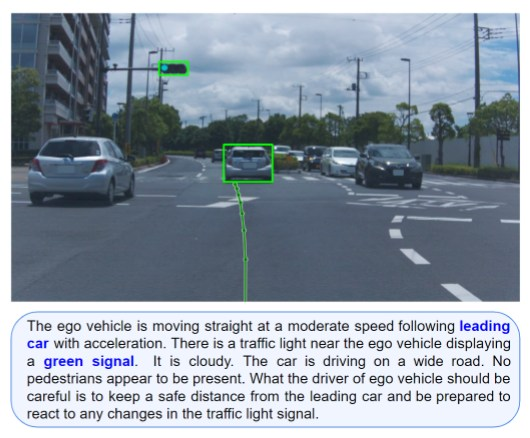
図7：CoVLA-Dataset における画像とキャプションの例。
図中キャプションの訳：「自車は先行車に追従しながら加速しつつ中程度の速度で直進している。自車の近くに青信号を表示している信号機がある。曇りである。車は広い道路を走行している。歩行者は見当たらない。自車の運転者が注意すべきことは、先行車との安全な車間距離を保ち、信号の変化に対応できるよう備えることである。」
| キー（Key） | 値（Value） |
|---|---|
frame_id | 569 |
image_path | images/2022-07-08–11-37-27–5_first/0569.png |
vEgo | 7.43082332611084 |
vEgoRaw | 7.4395833015441895 |
aEgo | 0.6044138669967651 |
steeringAngleDeg | 0.6073870658874512 |
steeringTorque | 69.0 |
brake | 0.0 |
brakePressed | false |
gas | 0.20499999821186066 |
gasPressed | true |
doorOpen | false |
seatbeltUnlatched | false |
gearShifter | drive |
leftBlinker | false |
rightBlinker | false |
orientations_calib | \( \begin{bmatrix} 2.9467956252753775 & 0.9174552319868815 & 2.2181786819453384 \end{bmatrix} \) |
orientations_ecef | \( \begin{bmatrix} 2.9243210649189977 & 0.9224135550861058 & 2.1900513923432348 \end{bmatrix} \) |
orientations_ned | \( \begin{bmatrix} -0.013463193567253392 & 0.006326533926443111 & -2.990125370637735 \end{bmatrix} \) |
positions_ecef | \( \begin{bmatrix} -3959574.486029379 & 3328427.354910454 & 3719065.7393601397 \end{bmatrix} \) |
velocities_calib | \( \begin{bmatrix} 7.317097759615114 & 0.003242519329502727 & 0.005369323447773883 \end{bmatrix} \) |
velocities_ecef | \( \begin{bmatrix} -2.6767882666706004 & 3.547338396353873 & -5.813015899212604 \end{bmatrix} \) |
accelerations_calib | \( \begin{bmatrix} 0.4734579094803297 & 0.08559864698994124 & -0.13132037594775653 \end{bmatrix} \) |
accelerations_device | \( \begin{bmatrix} 0.4736293760658642 & 0.07819260264673351 & -0.13526157094253702 \end{bmatrix} \) |
angular_velocities_calib | \( \begin{bmatrix} 0.011550541795216845 & 0.012243857869171634 & -0.007753300486330907 \end{bmatrix} \) |
angular_velocities_device | \( \begin{bmatrix} 0.011675888068301523 & 0.01206267096884485 & -0.007848971055415363 \end{bmatrix} \) |
timestamp | 1657248173200 |
extrinsic_matrix | \( \begin{bmatrix} -0.015688330416257182 & -0.9998769191404183 & 0.00012959444326649344 & 0.0 \\ -0.008260370686184616 & 2.879912020664621e-21 & -0.9999658837914467 & 1.2200000286102295 \\ 0.9998428078989188 & -0.01568886620613436 & -0.008259354077745229 & 0.0 \\ 0.0 & 0.0 & 0.0 & 1.0 \end{bmatrix} \) |
intrinsic_matrix | \( \begin{bmatrix} 2648.0 & 0.0 & 964.0 \\ 0.0 & 2648.0 & 604.0 \\ 0.0 & 0.0 & 1.0 \end{bmatrix} \) |
trajectory_count | 60 |
| キー（Key） | 値（Value） |
|---|---|
trajectory | \( \begin{bmatrix} 0.0 & -0.0 & 0.0 \\ \dots & \dots & \dots \\ 2.2367286927600376 & 0.021314714278469867 & 0.011369742248091336 \\ \dots & \dots & \dots \\ 4.529136516056675 & 0.05988551136966269 & 0.03572205827208557 \\ \dots & \dots & \dots \\ 6.919731941586808 & 0.08958899605082428 & 0.050459818682157966 \\ \dots & \dots & \dots \\ 9.301852576186251 & 0.1417775525229876 & 0.07520389298492622 \\ \dots & \dots & \dots \\ 11.677091075613516 & 0.2108797042962825 & 0.09371664992653018 \\ \dots & \dots & \dots \\ 14.027571172292527 & 0.28508464282229706 & 0.10760938523286476 \\ \dots & \dots & \dots \\ 16.350994760951718 & 0.38061347529509826 & 0.1208462683905208 \\ \dots & \dots & \dots \\ 18.675065252972097 & 0.4777731491748536 & 0.14622174266379429 \\ \dots & \dots & \dots \\ 20.998125620182435 & 0.5860796022647292 & 0.1657656398148593 \end{bmatrix} \) |
表4：車両状態リストの例。（訳注：原表は 13〜14 ページにまたがる 1 つの表であり、ここではページ境界で 2 つに分けて掲載した。キー名は原文のまま）